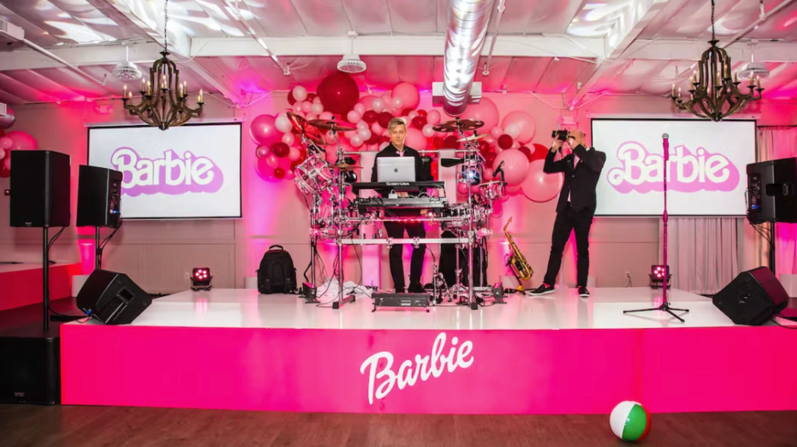

Tematicas en las fiestas
Las temáticas en las fiestas son conceptos o ideas que definen y guían la atmósfera, la decoración, la vestimenta y las actividades de un evento social. Estas temáticas pueden variar ampliamente y pueden basarse en diferentes elementos, como películas, épocas históricas, culturas, géneros musicales o incluso colores específicos. La elección de una temática específica añade un toque de originalidad y creatividad a la fiesta, permitiendo que los invitados se sumerjan en un ambiente único y emocionante. Desde fiestas de disfraces hasta eventos inspirados en la naturaleza, las temáticas ofrecen una oportunidad para que los anfitriones y los invitados se diviertan y se conecten en torno a un concepto compartido.
